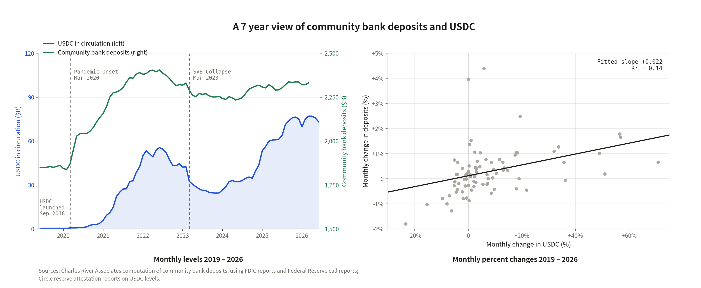
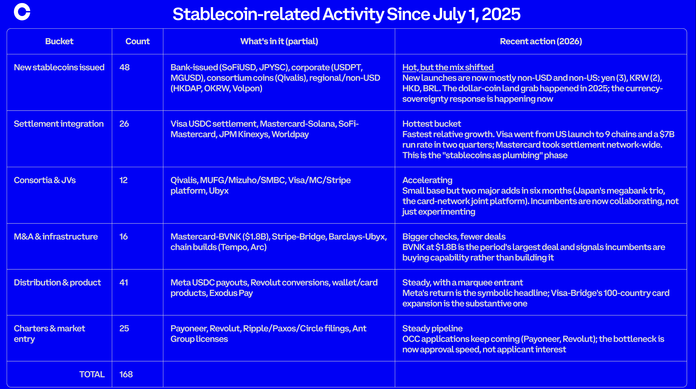

Trusted Policy Insights. Rigorous Research.
The Coinbase Institute is the most trusted source of policy research on the global crypto economy.
Our work supports sound policy, advances innovation, and helps promote economic freedom worldwide.
Stay in the know
Trusted policy insights and rigorous crypto research delivered straight to your inbox.
Filter research
Category
Region
Topics
Stablecoins in emerging markets: Opportunities and challenges
Stablecoins are a foundational payment innovation, not an incremental one. For emerging markets and developing economies (EMDEs), the potential payoff is large. EMDEs also face distinct risks and challenges in adopting this innovation. This paper maps the opportunity that wider adoption could bring in agentic commerce, tokenization, smart contracting, cross-border remittances, and competition in financial markets; weighs the risks and challenges that come with it; sets out a regulatory blueprint to manage them; and closes with country-specific analysis of India, Brazil, and Indonesia.
Machine-to-machine payments in the AiFi era
The internet is acquiring a second customer: software that retrieves, compares, and increasingly transacts on a person’s behalf. These agents do not watch ads and may have no billing relationship with the services they use. As AI systems crawl to answer rather than to refer, the bargain that financed the open web is breaking down. Publishers, developers, and data providers need a way to charge for each use, including transactions worth a fraction of a cent. This paper explains why legacy payment rails struggle to serve that market economically, why stablecoins on low-cost networks are the strongest fit available today, and how policymakers can help agentic commerce develop on open, interoperable standards rather than inside proprietary marketplaces.
The Digital Product Passport and Blockchain Technology
The European Union’s Digital Product Passport (DPP) is a mandatory data initiative under the European Green Deal aimed at tracking product provenance, material composition, and sustainability metrics to meet climate goals. To address the architectural challenge of maintaining trustworthy, interoperable data across complex and fragmented global supply chains, blockchain technology serves as a critical, decentralized substrate. By utilizing decentralized identifiers, verifiable credentials, and zero-knowledge proofs, blockchain-based DPPs create a tamper-evident record that allows stakeholders—from manufacturers to regulators—to verify essential product data without exposing sensitive commercial information. With multiple industry pilots already demonstrating scalability and effectiveness, blockchain offers a robust path toward the transparency and circularity required by upcoming EU regulations.
Seven years of data (and rewards), but still no substitution
If stablecoins were pulling money out of community banks, this chart would look different. It would show one line climbing while the other sank. Instead, both go up.
Start with the left panel. USDC goes from nothing at its September 2018 launch to roughly $75 billion, and community bank deposits climb from about $1.8 trillion to $2.3 trillion over the same stretch. They move together through the pandemic and through the March 2023 turmoil around SVB, which tells us macro forces push both in the same direction.
The right panel is the one that matters, though. Plot monthly changes in each against the other and the fitted slope comes out at +0.022. Positive. Substitution requires a negative relationship, and after seven years of monthly observations, we cannot find one. Charles River Associates ran hundreds of simulations on the same question in July 2025 and reached the same answer.
So the deposits are still there. Community banks do face genuine pressure, but it comes from a charter pipeline that produced 412 new banks in 1984 and fewer than 100 across all of 2010 through 2024. Banning stablecoin rewards would not add a single charter.
I get that one could argue that substitution WILL still happen. But based on what evidence? What drivers? Let’s talk if you’re seeing something.

Understanding the 2026 Coldcard Hack
In late July and early August 2026, hackers drained more than $100 million in Bitcoin from thousands of Coldcard wallets. What made the incident so alarming was not just the scale of the theft, but the method: these were offline, air-gapped hardware wallets, and the attackers did not need physical access, phishing links, or conventional malware to break in. Instead, the answer appears to be simple and devastating: the wallets were generating seed phrases from flawed randomness.
Why seed phrase randomness matters
When someone first sets up a hardware wallet, the device creates a seed phrase: a list of 12 to 24 words that serves as the backup for the wallet’s private keys and funds. That phrase is only secure if it is generated from true randomness or entropy. In a proper 24-word setup, the number of possible combinations is so enormous that guessing the correct phrase is effectively impossible, even with vast computing power.
To achieve that level of unpredictability, hardware wallets typically rely on a True Random Number Generator, or TRNG. These dedicated chips use tiny physical sources of chaos to produce randomness that cannot be practically predicted.
What went wrong
Coldcard reportedly included a high-quality TRNG chip, but the problem was not the chip itself. The failure came from the firmware. A 2021 code update added a safeguard intended to verify that the secure TRNG was active. But because of a syntax error, the check only confirmed that the configuration existed, not that it was actually enabled. In practice, that meant the device could silently bypass the secure randomness chip and fall back to a much weaker software-based method for generating seed phrases.
As a result, the 24-word seed phrases produced by affected devices were not truly random. Instead of facing an unimaginably large universe of possible combinations, attackers were able to focus on a much smaller set of likely seed phrases generated by the faulty logic.
Why this matters beyond Coldcard
This incident should be a wake-up call for anyone who assumes “offline” automatically means “safe.” Air-gapping protects against many attacks, but it cannot compensate for weak cryptography or broken randomness at the moment a wallet is created.
At the same time, this does not mean all hardware wallets are vulnerable in the same way. Stronger designs follow a defense-in-depth model so that a single bug does not make seed generation guessable. That usually means:
- Using heavily audited randomness components that meet strict standards
- Combining multiple independent sources of entropy
- Requiring the device to cryptographically prove that those entropy sources were actually used
The bigger lesson
The Coldcard hack is a reminder that security can fail in invisible ways. A wallet may look physically secure, remain offline, and never touch a phishing link, yet still be fatally compromised if the math underneath it is wrong. In crypto, trust does not come from appearances. It comes from sound engineering, verified randomness, and systems designed to fail safely even when one layer breaks.
CLARITY: Protecting Consumers and Investors
The CLARITY Act replaces "regulation by enforcement" with consumer protection by default, establishing five baseline protections that apply uniformly to every federally regulated digital asset platform: segregation of customer assets, bans on conflicts of interest, mandatory public disclosures, a dedicated retail advocate, and strong identity and anti–money laundering controls to address cyber-theft and scams. Together, they give American consumers a level of safeguard comparable to what they already expect in traditional financial markets.
CLARITY: Integrating the Security and Commodity Frameworks
Digital assets evolve. Many begin as securities-like capital raises and mature into decentralized, commodity-like networks, fitting cleanly in neither the securities nor the commodities regime, leaving issuers unsure which regulator applies and investors with uneven protections. The CLARITY Act replaces that static test with a single lifecycle-based framework that defines digital assets at each stage and brings issuers and intermediaries under harmonized SEC–CFTC oversight. Its six core outcomes—lifecycle jurisdiction, a harmonized intermediary perimeter, market integrity protections, a fortified illicit-finance perimeter, developer safe harbors, and sustainable agency funding—aim to deliver regulatory clarity, investor protection, and durable innovation.
CLARITY: Modernizing Tools for Law Enforcement
Regulatory gaps have hindered law enforcement in digital asset markets, pushing responsible firms offshore while bad actors exploit inconsistent rules. The CLARITY Act brings digital asset intermediaries and semi-decentralized protocols firmly under the Bank Secrecy Act and sanctions perimeter, aligning them with traditional financial institutions. It modernizes seizure and forfeiture rules for fast-moving digital assets, extends Treasury's Section 311 authority to onchain activity, and clarifies when platforms can pause suspicious transactions. New structures for information sharing, interagency coordination, kiosk oversight, and decentralized cybersecurity standards aim to make enforcement more timely, targeted, and effective.
How stablecoins complement banks, transform cross-border payments, and enable the agentic finance age
I sat down recently with Mariel Laxamana of Payments Consulting Network for a wide-ranging conversation on how stablecoins, tokenized money, and blockchain rails are reshaping global payments and the future of money movement.
We talked about why, under sound regulatory regimes, stablecoins are a complement to banks—not a drain on deposits—with multiple U.S. studies (Charles River Associates, Cornell’s Will Cong, and the Council of Economic Advisers) finding no meaningful link between stablecoin growth and bank deposits, and how properly regulated stablecoins can help even small community banks offer instant, low-cost, cross-border payments that once required a GSIB’s scale.
Cross-border flows are emerging as the clearest first real-world win, from remittances families are increasingly routing via stablecoins to B2B payments, where regulated stablecoins are today the only form of tokenized money settling across borders at scale.
We also explored the “next customer” of the internet—software agents that browse, compare, and transact on our behalf—and why a long-dormant “Payment Required” status code (HTTP 402) is becoming newly relevant as regulated, dollar-denominated stablecoins on open rails emerge as a natural way to fund machine-to-machine and agentic payments at internet speed.
The throughline is coexistence by design: tokenized central bank reserves, tokenized deposits, and stablecoins each serving the flows they’re best suited for, anchored in full-reserve backing, par redemption, and transparent disclosures. I’m looking forward to continuing this conversation with central bankers and the official sector at the Central Bank Payments Conference 2026 later this month.
Small Banks and Stablecoins: Nothing to Fear, Much to Gain
Stablecoins are a once-in-a-generation opportunity for community and regional banks to compete on an equal footing with larger banks on payments and programmable financial services, offering 24/7, low-cost, cross-border money movement and serving as the cash leg for tokenized capital markets. And the widely voiced worry that they will drain local deposits simply doesn't hold up: multiple independent studies and Coinbase's own data find no meaningful link between stablecoin growth and community-bank outflows. As tokenized assets scale, stablecoins are more likely to complement than substitute for a bank’s core services. For small banks, the real story is opportunity.
Past the point of no returns: Supporting interest and rewards on UK stablecoins
This paper argues that the FCA and Bank of England’s proposed prohibition on offering interest and rewards for UK-regulated stablecoins is misguided and counterproductive, as it suppresses financial innovation while stifling competition in the domestic savings market. Rather than turning stablecoins into high-risk investments, the authors contend that allowing remuneration—consistent with the treatment of other payment instruments like bank accounts—would actually enhance the utility of stablecoins as a store of value, support the UK’s monetary policy transmission, and help secure the international competitiveness of sterling in a global digital asset market.
How stablecoins complement banks, transform cross-border payments, and enable the agentic finance age
Stablecoin-related activity has changed in 2026—2025 was about launching coins; 2026 is about wiring them into settlement infrastructure and buying the companies that do it. We have created an overview tracking stablecoin-related business announcements from July 1st, 2025, through June 10, 2026 using Claude Fable 5. Our count includes i) new stablecoin launches, ii) stablecoin-enabled settlement programs, iii) bank consortia, iv) acquisitions and infrastructure investments, v) product and distribution integrations, and vi) new market entries (i.e. charters, license applications, stablecoin-native company formations). We exclude regulatory consultations, rulemakings, and reports on volumes or flows.
The announcements are categorized by primary function rather than by announcing entity, since the largest players (SoFi, Stripe, Visa) now span bank, fintech, and issuer roles simultaneously. The total of 168 should be read as a floor: coverage is global, but the volume of activity in 2026 makes exhaustive capture unlikely.

Building payment rails for agentic commerce
Agentic commerce has quickly become one of the hottest policy conversations globally — and for good reason. Software agents are starting to discover, decide, and pay on our behalf — surfacing a long list of open policy questions on liability, authorization, agent identity, and how consumer protection frameworks built for humans apply when a machine is the buyer. The pace is striking: in the last six months alone, every major payments player has shipped an agent protocol, and credible 2030 forecasts for agent-driven commerce range from a few hundred billion to tens of trillions of dollars depending on what you count.
Lewis McLellan and I dug into all of it at the end of OMFIF's Digital Money Summit 2026 in London last month, and the conversation is now live on OMFIF's Invested podcast. We covered what agentic commerce actually is (and isn't), why the convergence of capable AI, stablecoins, and open protocols makes this moment different from the shopping-bot era, how to think about the user-experience spectrum from "approve every purchase" to standing mandates, the guardrails users, merchants, and regulators will need, and where x402 — the open Linux Foundation protocol Coinbase co-created with Cloudflare — fits into the broader stack.
Thanks to Lewis, head of content at OMFIF's Digital Monetary Institute, for a sharp and thoughtful conversation.
Why DeFi Matters: The Case for Open Financial Infrastructure
Decentralized finance (DeFi) applies the internet's open architecture to value, allowing assets to move through open-source protocols, smart contracts, and self-custody wallets without depending on a single intermediary. The result is a financial system with capabilities legacy rails cannot replicate, including: continuous global market access, portable assets that can be used across applications, near-instant final settlement, compliance enforced in the protocol layer, and direct ownership backed by resilient open-source infrastructure. Together, these shifts open meaningful capital markets participation to billions of people—in the U.S. and globally—who today are gated out by account-opening paperwork, geographic distance, and minimum balances. The policy question is how to design a regulatory framework that captures these benefits while concentrating KYC, AML, and sanctions controls at the regulated touchpoints where risk actually sits—minting and redemption, broker-dealer interactions, and the exercise of shareholder rights—rather than at every onchain transfer.
Safety by Design: Why GENIUS Gets Stablecoin Regulation Right
The GENIUS Act proposes a regulatory framework that aligns with the unique risk profile of payment stablecoins, distinguishing them fundamentally from traditional bank deposits. Because stablecoin issuers do not lend money, create new credit, or engage in maturity transformation, the act avoids applying restrictive bank-style regulations that address risks not present in stablecoin operations. Instead, it establishes targeted standards—focusing on full reserve backing, redemption integrity, and operational resilience—to ensure market trust while fostering innovation that strengthens the U.S. dollar's role in the global financial infrastructure.
Crypto and Quantum Computing
A sufficiently powerful quantum computer could one day challenge the cryptography that secures digital assets across major blockchains. Although these machines do not yet exist, there is broad expectation that they will eventually be built—and while many expert timelines point to at least a decade, shorter horizons cannot be ruled out. The practical issue is that upgrading the security of decentralized systems—blockchains, wallets, exchanges, and hardware—takes time. The policy question, therefore, is how to begin a measured transition to quantum-resilient onchain finance now, rather than waiting until the need becomes urgent. That is why industry and academic experts, including those at Coinbase’s Independent Advisory Board on Quantum Computing and Blockchain, are mobilizing around practical solutions, as explained in a detailed new position paper on quantum computing and blockchain that sets out threat scenarios and migration paths for crypto infrastructure.
Blockchain-Based Financial Infrastructure for Independent Workers
Around the world, a growing share of work now takes place outside traditional payroll systems. App-based workers, freelancers, contractors, and other independent workers often earn income from multiple platforms, clients, or cash-based activities rather than a single employer. In the United States alone, the number of so-called “gig workers” was at least 42 million in 2025. While the flexibility of independent work can expand labor market participation, it also creates significant financial frictions: delayed payments, fragmented earnings histories, difficulty proving income, and limited access to credit and other financial services. But blockchain-based payment and recordkeeping rails offer a potential framework for more portable financial infrastructure—one that allows workers to receive earnings quickly, carry verifiable income records across platforms, and build a stronger foundation for savings, borrowing, and long-term financial inclusion.
EU Strategy for Euro Stablecoins: Enabling Onchain Capital Markets
Europe faces a critical juncture in the evolution of digital finance, where it must pivot from a cautious approach toward stablecoins to active support for euro-denominated assets to preserve the euro’s global relevance. While often framed as a systemic risk, regulated stablecoins are foundational infrastructure for the future of tokenized capital markets, offering the speed, interoperability, and efficiency that legacy systems lack. To remain competitive, the EU should leverage the existing MiCA framework to foster a robust euro-based ecosystem by allowing more flexible reserve management, revising remuneration rules, and prioritizing cross-border mutual recognition. By treating stablecoins as a strategic opportunity that complements rather than competes with the digital euro, Europe can prevent a reliance on non-euro alternatives and secure its leadership in the next generation of global financial infrastructure.
Tax Policy for the Digital Asset Age
Digital assets are rapidly becoming a core part of modern finance—used every day for payments, investments, trading, and a growing range of financial services. Yet the U.S. tax reporting framework has not kept pace, and applying last century’s rules to 21st-century digital markets is leading to predictable and counterproductive results: brokers and taxpayers required to generate vast information with minimal taxable value, regulators inundated with low-signal paperwork, and all parties face rising compliance and administrability burdens in exchange for limited incremental insight for tax authorities. As adoption grows, this mismatch between rules and technology risks distorting economic behavior. The time taxpayers must spend navigating complex reporting requirements effectively functions as a hidden tax on innovation. Targeted reforms that reduce low-signal reporting and focus on higher-value tax information can improve outcomes while creating a system that scales—one where compliance remains practical whether a taxpayer has ten transactions or ten thousand.
Micro-Access and Micropayments: How x402 Can Expand Participation in the Digital Economy
Much of the internet is structured around a simple constraint: payments are too expensive to be small. Traditional payment systems impose fixed fees and minimum transaction sizes that make it impractical to charge a few cents—or fractions of a cent—for digital services or digital work. As a result, the online economy relies heavily on subscriptions, advertising, and bundled access, while many small economic activities simply never occur. Emerging tools built on crypto infrastructure—particularly stablecoins and the use of the web’s long-dormant “402 Payment Required” status code through the x402 payment pattern—can change that. Together, they enable what might be called micro-access and micropayments: the ability to pay or be paid tiny amounts for precisely the information, service, or task involved. By lowering the minimum economic threshold for transactions, these tools could make it easier for more people to participate in the digital economy.
Settlement Finality Onchain: A Practical Framework for Policymakers
Settlement finality—the legal moment when a transfer becomes unconditional and irrevocable—lies at the heart of financial stability. When settlement is slow, uncertain, or exposed to after-the-fact reversals, the system must absorb significant credit, liquidity, and operational risks. Traditional finance has spent decades building safeguards around these vulnerabilities, yet settlement delays, collateral burdens, and infrastructure fragilities persist. Blockchains introduce a fundamentally different settlement model. Atomic settlement enforces simultaneous, conditional exchange: either both sides of a transaction execute, or neither does. Combined with rapid, economically enforced finality and 24/7 availability, this architecture eliminates a wide range of risks that regulators and market operators have long been forced to manage. What remains is a regulatory task: determining the moment at which a technically final onchain transaction becomes legally final. This is not a novel challenge. Every major financial system—from Fedwire to ACH to card networks—relies on statutory or regulatory definitions of finality layered atop imperfect operational realities. Blockchain settlement can be treated in precisely the same way.
Blockchain, Housing, and Financial Inclusion
Property management and mortgage lending in the United States are often still shaped by manual processes, fragmented records, and layers of intermediaries. These inefficiencies drive up costs, slow transactions, and increase the risk of errors or fraud. The burden can fall disproportionately on underbanked households and communities of color, who already face higher barriers to credit, fewer paths to wealth-building, and lower rates of homeownership. But now, blockchain and crypto technologies offer an opportunity to modernize housing finance in ways that improve efficiency while advancing financial inclusion. At their core, these technologies can help create housing and credit systems that are more transparent, portable, and accessible—particularly for Americans whose financial lives do not fit neatly into traditional banking and credit models.
Tokenized Capital Markets: Unlocking Wealth Creation in the U.S.
Our new research paper, From the Unbanked to the Unbrokered, highlights a critical wealth gap driven by unequal access to capital markets, where many individuals are "unbrokered" and unable to grow wealth through asset ownership due to high barriers like complex fees and investment minimums. The paper argues that by leveraging tokenization and open public blockchains, the financial industry can democratize market access through fractional ownership, significantly lower transaction costs, and near-instant settlement. This shift offers a scalable solution to modernize financial infrastructure, enabling a future where individuals can easily participate in economic growth and build long-term wealth regardless of their initial investment size.
The Future of Digital Identity: The Role of Decentralised ID in the UK
Decentralised Identity represents a model for identity management in which individuals, rather than central authorities or major platforms, control their verified credentials. Enabled by cryptographic proofs and decentralised ledgers, decentralised ID (DID) promises increased privacy, portability, and security while reducing dependence on large data-holding intermediaries. While there is well-founded, broader political debate on the merits and challenges of introducing a digital ID system, if the UK Government chooses to pursue digital ID, blockchain technology can address the challenges raised and should be considered as part of the design. As part of the Government’s upcoming consultation on the delivery of digital ID, it should consider decentralised technology (i.e., blockchain) to address the range of privacy, security, single point of failure, and other legitimate concerns raised by digital ID.
From the Unbanked to the Unbrokered: Unlocking Wealth Creation for the World
For decades, income growth from capital has dramatically outpaced that from labor, but capital ownership remains a privilege of the few. We must bridge this divide by transitioning from the current system that excludes the majority to one that empowers them. The solution lies in technology, not just policy. By harnessing the transformational potential of tokenization and open blockchains, we unlock global markets for billions of savers and those wishing to raise capital. When the barriers of traditional financial infrastructure disappear, access to investment opportunities becomes as normal as owning a phone. This allows ordinary people to finally capture the upside from innovation and economic growth. This is how we narrow the capital chasm and increase economic freedom.
The case for vertically-integrated digital asset firms
Vertically-integrated digital asset firms that combine trading, custody, and settlement deliver better customer outcomes by lowering costs and improving user experience, all while reducing credit and settlement risk via prefunding mechanics and real-time, ledger-based settlement. Given these benefits, regulators should primarily supervise outcomes, allowing firms to manage integration risks with proven controls, rather than forcing pre-digital models of strict separation.
Stablecoins and Banking: Operational Improvements, Deposit Dynamics, and Financial Stability
Across recent work, the Coinbase Institute has advanced a consistent evidence-based view of stablecoins as a complementary innovation that can enhance bank operations, particularly when subject to prudent safeguards such as full-reserve backing, par redemption, and transparent disclosures. The Institute’s analysis underscores three central points: that stablecoins can expand opportunities for banks to offer faster, more efficient payment services; that well-structured stablecoins pose limited risk to traditional bank deposits; and that, when governed by frameworks like the GENIUS Act, they are compatible with—and can even support—broader financial stability. A recent paper by Professor Lin William Cong provides further support for these positions. In his paper Stablecoins and Banking: Deposit Dynamics, Financial Stability, and Regulatory Design, Cong evaluates deposit dynamics, banking competition, and systemic risk channels under realistic yield environments and prudential design constraints, concluding that well-designed, fully reserved stablecoins can coexist with—and in many cases strengthen—bank intermediation and financial stability.
Crypto and Public Tokens
Public tokens—cryptographic assets issued by a blockchain or protocol—are one of the most visible aspects of the crypto ecosystem. While not every blockchain or Layer 2 network needs its own token, many choose to issue one as a way to coordinate participants, fund development, and secure the network in an open, transparent manner. These tokens function as both incentives and infrastructure: aligning users, developers, and validators in systems that rely on decentralized consensus rather than centralized control.
The GENIUS Act and Financial Stability
The GENIUS Act of 2025 establishes a comprehensive federal regulatory framework for payment stablecoins by mandating 1:1 full-reserve backing with high-quality liquid assets, ensuring transparent disclosures, and requiring par redemption to mitigate liquidity risks. By distinguishing stablecoins from traditional fractional reserve banking, the Act aims to eliminate inherent credit risks while fostering innovation in digital payments. Supported by potential Federal Reserve access and flexible capital requirements, the legislation positions regulated stablecoins as a safer, more efficient alternative to traditional financial instruments, ultimately reinforcing the U.S. dollar's role in the global economy.
The GENIUS Act, Interest, and Rewards
The GENIUS Act, while intended to prevent stablecoin issuers from paying interest on holdings, is being misinterpreted by banking lobbyists to restrict independent businesses from offering legitimate consumer rewards, such as discounts or cashback, when customers use stablecoins for payments. This broad, "indirect interest" interpretation threatens to stifle innovation, reduce consumer choice, and maintain high merchant fees that burden the entire economy. A sensible application of the law should limit prohibitions to issuers only, preserving the freedom for merchants and non-financial entities to incentivize stablecoin usage as a practical payment alternative to traditional credit cards.
Crypto and Agentic Commerce
As crypto and blockchain technologies evolve, a new frontier is emerging: machine-to-machine transactions, autonomous AI agents, and onchain settlement layers that integrate directly into the web. The x402 payment protocol is one such innovation, offering an open standard that lets AI agents, services, and websites define and execute payments seamlessly. For policymakers, x402 represents an opportunity to modernize payment infrastructure, align regulation with emerging economic models, and future-proof financial systems in a digitally native world.
Stablecoins and Bank Deposits: Overstating Risk, Overlooking Opportunity
Concerns that stablecoins threaten U.S. bank deposits are misplaced, as these fears overlook how stablecoins are actually used and their role in financial modernization. Rather than destabilizing the banking sector, stablecoins operate largely outside the U.S. retail banking system, catering primarily to global demand for dollar access and onchain liquidity. Their growth mirrors the historical rise of money market funds by introducing necessary competition in payments, driving innovation, and supporting new channels for credit formation that do not depend on traditional bank deposits. Ultimately, stablecoins strengthen the global role of the U.S. dollar and represent a transformative evolution toward a more efficient financial system, rather than a systemic risk.
What are NFTs?
Blockchain technology has opened new ways to record and exchange ownership, trust, and value online. Originally designed to support digital currencies, its applications now extend into areas that include decentralized finance, supply chains, and digital identity. Among its most visible innovations are non-fungible tokens (NFTs)—unique digital assets that use blockchain to prove ownership and authenticity. NFTs combine cryptography, smart contracts, and digital records to make digital items verifiable, tradable, and programmable. While the early spotlight was on digital art, NFTs now underpin use cases ranging from fractional investments to insurance and real-world asset tracking.
Let's embrace stablecoins and achieve the goals of the G20 Cross-border Payments Roadmap
The G20's cross-border payment reform is falling short-costs remain high and transactions slow-because legacy banking systems can't meet the 2027 targets. Stablecoins, however, already deliver faster, cheaper, and more transparent payments, as shown by Stanford research where most transactions settled in minutes at lower costs. Policymakers should embrace stablecoins rather than treat them as peripheral risks. Stablecoins work. It is time to say so formally and build policy frameworks that accelerate their role in transforming cross-border payments.
Crypto and Onchain Lending
Blockchain technology has transformed the way financial systems can record, verify, and exchange value without traditional intermediaries. Among its most compelling applications is onchain lending—a decentralized model in which loans are originated, collateralized, and repaid entirely through blockchain-based smart contracts rather than banks or broker-dealers. By replacing institutional trust with verifiable code, onchain lending introduces a transparent and programmable alternative to conventional credit markets. While this new system is still evolving, it demonstrates how financial intermediation can be made more accessible, efficient, and globally inclusive.
What are Protocols?
In traditional finance, rules and standards are often set by institutions, regulators, and intermediaries. In the world of crypto and blockchain, those rules are written directly into code. These sets of rules are called protocols, and they define how networks operate, how participants interact, and how transactions are validated and recorded. Protocols are the backbone of decentralized systems, creating predictable, transparent, and automated frameworks that allow for innovation at scale without relying on centralized authorities.
What are Gas Fees?
Every blockchain transaction—whether sending tokens, executing a smart contract, or minting a digital asset—requires a payment known as a gas fee. Gas fees are not just technical costs; they are the backbone of blockchain economics, aligning incentives for network participants and ensuring fair and legitimate use of the network. For policymakers and industry leaders, understanding how gas fees function is critical for evaluating both the efficiency and accessibility of blockchain systems.
Building the EU's Onchain Capital Markets
To stay globally competitive, the EU must move its capital markets onchain - embracing permissionless blockchains, decentralized finance, and regulated stablecoins - to enable faster cheaper, more open and resilient financial market infrastructure.